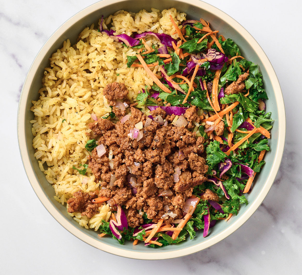

Zesty Beef Rainbow Veggie Rice Bowl
Zesty, Tasty, Fresh. What is not to like about this Beef and rainbow veggie rice bowl!
A masterful blend of flavors, combining tender grass-fed beef, fresh veggies, and organic brown rice.
With a few simple ingredients we can create this dish in all of its glory to be enjoyed from the comfort of your own home. I usually like to make recipes
like this one in bulk to be portioned off and frozen for delectible meal prep.
We can throw this meal together if only a few simple steps, involving a few simple ingredients.
Ingredients
- Rainbow Veggie Mix
- Grass-fed Ground Beef
- Taco Seasoning Blend
- Fresh Shallot
- Organic Brown Rice
Steps
- Heat 1 tbsp oil in skillet over med-high + cook veggie mix with salt/pep 3-5 min until tender; set aside
- Peel + dice shallot, add to skillet on med heat with 1 tbsp oil, cook 2-3 min; add burgers to pan,
break into large chunks + sear undisturbed 2 min; flip meat over, season generously with salt/pep/taco seasoning,
then break into small pieces; cook 2-3 min until fully cooked + no pink remains
- Meanwhile, tear corner of rice to vent + heat in microwave 90 sec (careful—it'll be hot!)
- Divide rice between bowls + top with veg + beef—yum!